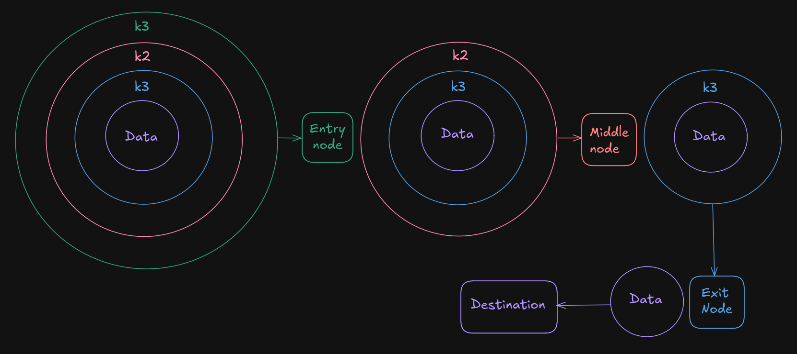
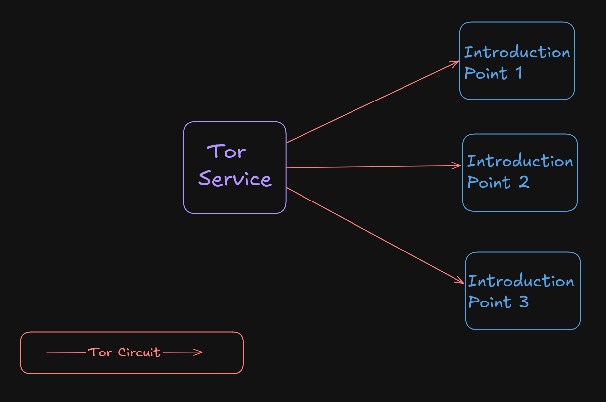
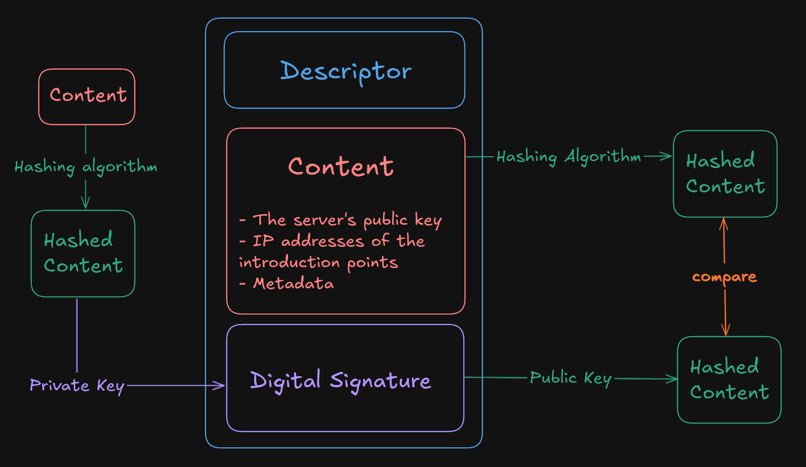
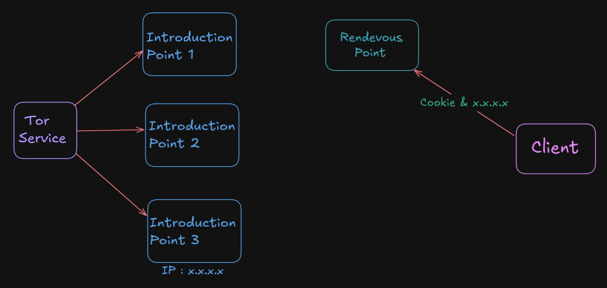
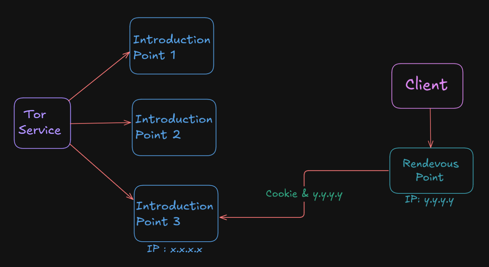
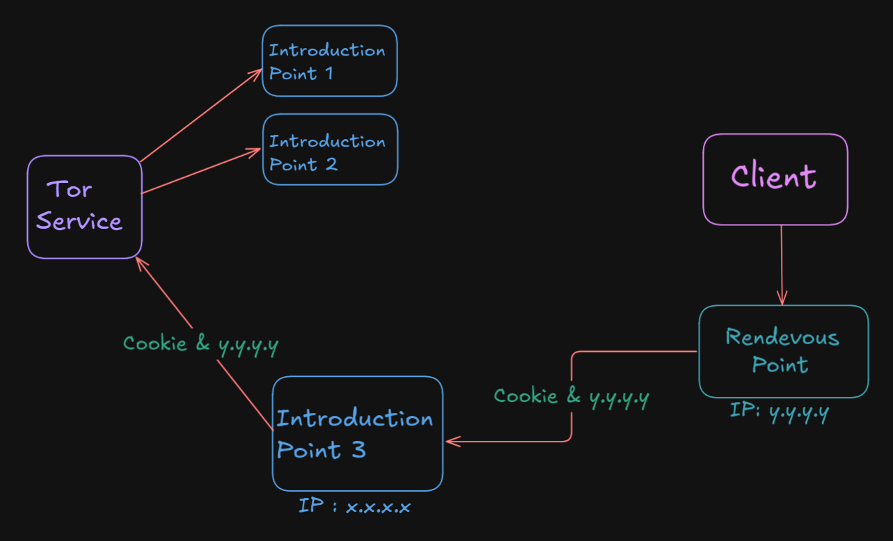
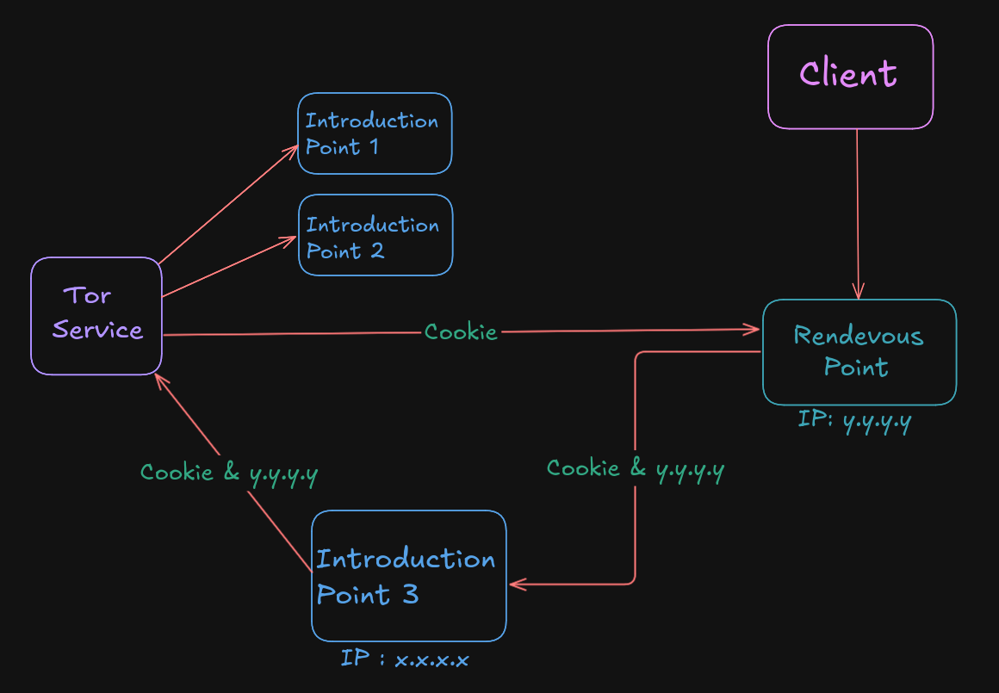
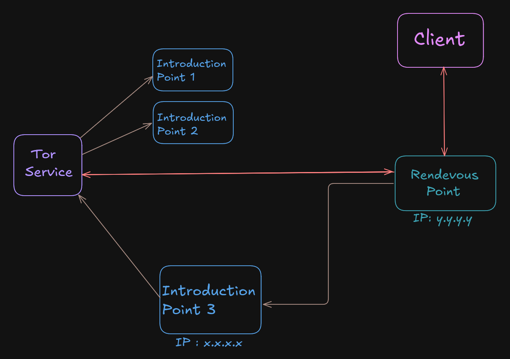

Tor Hidden Services
Connecting to a hidden service
- The client (the tor browser) picks three Tor nodes to be a guard (entry) node, a
middle node and an exit node.
Tor has a small set of trusted servers called directory authorities (around 10 hardcoded ones).
These authorities keep an up-to-date list of all Tor relays (nodes) that can be used by the tor client.
- The tor browser exchanges three keys with the three nodes.
- K3 with the Entry node
- K2 with the Middle node
- K1 with the Exit node
- When the browser wants to send out an http request, it encrypts it with K1, then K2, then K3.
- The Entry node receives the packet and decrypts the first encryption layer using its K3,
then it sees that it needs to forward the packet to the Middle node (the packet now has the
source IP address of the Entry node and the destination IP address of the Middle node).
- The Middle node receives the packet and decrypts the second encryption layer using K2, then forwards it to
the Exit node.
- The Exit node receives the packet and decrypts the final encryption layer using K1, then forwards the
request to the appropriate destination.
- Each node only knows the IP address of the device before and after it, so the client is anonymous here.
- When the tor client encrypts the request in three layers, it ensures appropriate addressing for each layer
(for example, after the first encryption layer is removed, the entry node should know where to forward the
packet, which should be the IP address of the middle node.
- The three tor nodes used to route the traffic are called a circuit.

How Hidden Services Work
- When a server decides to become a tor hidden service, it first uses a tor circuit to
connect to three random devices and chooses them to become its Introduction
Points.
- The identity of the server is protected here since it's connecting to these devices via a tor
circuit, so it looks just like any other client that is using the tor browser.

- The Hidden Service publishes a Descriptor, which contains the following:
- The Content of the descriptor, which would be the IP addresses of the chosen
introduction points, its public key for authentication, and some metadata about the server.
- Its Digital Signature:
- First, the server uses a Hashing algorithm to create a Hash value of the
Content.
- Then it Encrypts it using its Private Key.
- This is done to verify the identity of the server.

- Users can authenticate the descriptor (make sure that in order to connect to
xyz.onion they need to reach out to the specified introduction points) like this:
- First, they create a Hash value of the Content using the same
algorithm that the server used to create its own hash.
- Then they Decrypt the Digital Signature using the server's
Public Key (which is derived from its
xyz.onion address) resulting in
a (possibly the) hash.
- The two resulting hashes should match to verify the server's identity.
- After the client authenticates the descriptor, it creates another tor circuit consisting of an
Entry node, a Middle node and a Rendezvous Point. The
Rendezvous Point is the final node in this circuit, and it will act as the link between the client and the
server.
- The client generates a Cookie (which is a
randomly generated string used as a "one time
secret") and sends it over to the rendezvous point (thru the established circuit) along with the IP
address of a randomly selected
introduction point fetched from the descriptor.

- The rendezvous point receives the Cookie, and creates a new tor circuit of an Entry,
Middle, and Exit nodes to connect to the IP address of the
introduction point. Then, the rendezvous point sends over the Cookie to the introduction
point, along with its own IP address (the introduction point doesn't know the IP address of the
rendezvous point since the connection between them happened via a tor circuit).

- The introduction point receives the Cookie and the IP address of the rendezvous point, then sends these over
to the server (which is the tor service) via the tor circuit that was established in the beginning.

- The server decides if it wants to connect back to the client, if it does, it will create another
tor circuit (Entry, Middle and Exit nodes) to connect to the rendezvous point (it knows its IP address since
it received it with the cookie). Then it sends back that Cookie to the rendezvous point.

- The rendezvous point sees that it received the same Cookie from two devices (the server and the client), so
it connects them together.

Previous
Next